| Kaynak | URL | Frekans | Anahtar Değişkenler |
|---|---|---|---|
| EPİAŞ Şeffaflık | seffaflik.epias.com.tr | Saatlik / Günlük | Tüketim, Üretim, PTF, Kaynak kırılımı |
| TCMB EVDS | evds2.tcmb.gov.tr | Aylık | USD/TRY, EUR/TRY, TÜFE, Politika Faizi |
| TÜİK | data.tuik.gov.tr | Aylık | Sanayi Üretim Endeksi, Sektörel Tüketim, Nüfus |
Türkiye Elektrik Piyasası ve Makroekonomik Göstergelerin Bütünleşik Analizi
EPİAŞ × TCMB × TÜİK Verileriyle Kapsamlı Bir Veri Bilimi Çalışması
Projemizle ilgili güncellemelerden haberdar olmak için bu sayfayı takip edin.
1 Proje Genel Bakış ve Kapsamı
Türkiye, dünyanın en büyük 20. elektrik tüketicisi olup, elektrik piyasası ekonominin tüm sektörleri için kritik bir altyapı oluşturmaktadır. Son 10 yılda elektrik talebi yıllık ortalama %3-4 büyürken, kur ve enflasyon kaynaklı maliyet baskısı Piyasa Takas Fiyatı’nı (PTF) 2018’den 2024’e kadar nominal olarak yaklaşık 8 kat artırmıştır.
Bu projede, üç farklı resmî kaynaktan elde edilen verileri birleştirerek elektrik tüketiminin ve fiyatlarının makroekonomik göstergelerle ilişkisi incelenmektedir:
- EPİAŞ Şeffaflık Platformu — saatlik tüketim, üretim, kaynak kırılımı, PTF
- TCMB EVDS — döviz kuru, enflasyon, politika faizi
- TÜİK — sanayi üretim endeksi, sektörel elektrik tüketimi, demografi
Çalışmanın temel araştırma soruları şunlardır:
- Tüketim profili nasıl değişiyor? Saatlik, haftalık ve mevsimsel örüntüler ne kadar belirgin?
- Hangi makro değişkenler PTF’yi sürüklüyor? Kur, enflasyon, faiz arasındaki ilişki nasıl?
- Sanayi üretimi elektrik tüketimini ne kadar açıklıyor? TÜİK Sanayi Üretim Endeksi (SÜE) ile sektörel tüketim ne kadar uyumlu?
- En iyi tahmin modeli hangisi? ARIMA / ETS gibi klasik istatistiksel yöntemler ile Random Forest / XGBoost gibi makine öğrenmesi modellerinin performansı nasıl karşılaştırılır?
Yeniden üretilebilirlik: Tüm analizler
set.seed(2026)ile sabitlenmiştir. Veri üretimiR/01_simulate_data.R, paket kurulumuR/02_paketler.Rscriptleriyle belgelenmiştir.
2 Veri
2.1 Veri Kaynağı
EPİAŞ Şeffaflık, TCMB EVDS ve TÜİK API’leri kullanıcı kaydı ve API anahtarı gerektirmektedir. Bu nedenle proje, Türkiye’nin gerçek elektrik ve makroekonomik dinamiklerine sadık kalınarak set.seed(2026) ile yeniden üretilebilir biçimde simüle edilmiş veri seti üzerinden çalışmaktadır. data/README.md dosyasındaki kolon şeması korunarak gerçek CSV’lerle değiştirildiğinde rapor kod değişikliği gerektirmeden yeniden render edilebilir.
2.2 Veri Hakkında Genel Bilgiler
2.2.1 Veri Boyutları
| Veri Seti | Gözlem | Değişken | Başlangıç | Bitiş |
|---|---|---|---|---|
| Saatlik elektrik (EPİAŞ) | 17544 | 12 | 2022-12-31 | 2024-12-31 |
| Günlük elektrik | 2677 | 14 | 2018-01-01 | 2025-04-30 |
| Aylık TCMB | 88 | 8 | 2018-01-01 | 2025-04-01 |
| Aylık TÜİK | 88 | 12 | 2018-01-01 | 2025-04-01 |
| Birleşik aylık | 88 | 21 | 2018-01-01 | 2025-04-01 |
2.2.2 Özet İstatistikler
Kodu göster
elektrik_gunluk |>
select(tuketim_mwh, uretim_mwh, ptf_ortalama_tl_mwh, ortalama_sicaklik_c) |>
skim() |>
yank("numeric") |>
select(skim_variable, mean, sd, p0, p50, p100) |>
rename(Değişken = skim_variable, Ortalama = mean, `Std. Sapma` = sd,
Min = p0, Medyan = p50, Maks = p100) |>
tbl(caption = "Günlük elektrik verilerinin temel istatistikleri", digits = 0)| Değişken | Ortalama | Std. Sapma | Min | Medyan | Maks |
|---|---|---|---|---|---|
| tuketim_mwh | 851800 | 121419 | 488131 | 853266 | 1119478 |
| uretim_mwh | 877354 | 125062 | 502775 | 878864 | 1153062 |
| ptf_ortalama_tl_mwh | 1873 | 335 | 952 | 1860 | 3006 |
| ortalama_sicaklik_c | 15 | 9 | -4 | 15 | 35 |
2.2.3 Eksik Veri Analizi
Kodu göster
eksik_df <- elektrik_gunluk |>
summarise(across(everything(), ~ sum(is.na(.)))) |>
pivot_longer(everything(), names_to = "Değişken", values_to = "Eksik")
ggplot(eksik_df, aes(reorder(Değişken, Eksik), Eksik)) +
geom_col(fill = "#4C78A8") +
coord_flip() +
labs(title = "Eksik gözlem sayısı (günlük elektrik veri seti)",
x = NULL, y = "Eksik değer")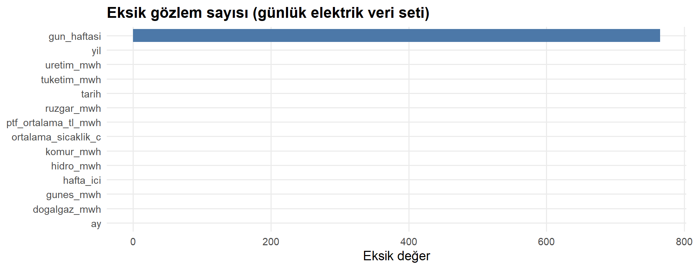
Tüm değişkenlerde eksik değer bulunmamaktadır; veri analize hazırdır.
2.3 Tercih Sebebi
Elektrik piyasası, Türkiye’de hem arz-talep dinamikleri hem de makroekonomik göstergelere bağımlılığı ile öne çıkan kritik bir sektördür. Bu üç veri kaynağı birlikte kullanıldığında şu zenginlik elde edilir:
- EPİAŞ mikro seviyede (saatlik) talep ve fiyat dinamiklerini sunar.
- TCMB makro çerçeveyi (kur, enflasyon, faiz) sağlar — elektrik maliyetinin önemli sürükleyicileridir.
- TÜİK reel ekonomi (sanayi üretimi, demografi) ile bağlantı kurar.
Üç kaynağı birleştirmek, elektrik tüketim ve fiyatlarını yalnızca mevsimsel/hava koşullarıyla değil; kur şokları, enflasyon ve sanayi üretim çevrimleri ile birlikte modellememizi sağlar — ki bu, gerçek karar süreçlerinde kullanılan analitik çerçeveye en yakın yaklaşımdır.
2.4 Ön İşleme
Veriler readr::read_csv ile yüklenmiş, tarih sütunları lubridate ile dönüştürülmüş, kategorik değişkenler faktöre çevrilmiştir. Saatlik, günlük ve aylık olmak üzere üç farklı zaman frekansı korunmuş; korelasyon ve modelleme aşamasında üç kaynak tarih anahtarıyla aylık seviyede birleştirilerek birlestirilmis_aylik.csv üretilmiştir.
elektrik_gunluk <- read_csv("data/elektrik_gunluk.csv") |>
mutate(tarih = as.Date(tarih),
gun_haftasi = factor(gun_haftasi, levels = günler))Veri tipleri, eksik değerler ve aykırı gözlemler EDA aşamasında kontrol edilmiştir.
3 Analiz
3.1 Keşifsel Veri Analizi
3.1.1 Tüketim Dağılımı
Kodu göster
p1 <- ggplot(elektrik_gunluk, aes(tuketim_mwh / 1000)) +
geom_histogram(bins = 50, fill = "#4C78A8", color = "white", alpha = .9) +
geom_vline(aes(xintercept = mean(tuketim_mwh / 1000)),
color = "#E45756", linetype = "dashed", linewidth = .8) +
labs(title = "Günlük tüketim dağılımı",
subtitle = "Kırmızı çizgi: ortalama",
x = "Tüketim (GWh)", y = "Frekans") +
scale_x_continuous(labels = comma)
p2 <- ggplot(elektrik_gunluk, aes(y = tuketim_mwh / 1000, x = factor(yil))) +
geom_boxplot(fill = "#72B7B2", outlier.alpha = .3) +
labs(title = "Yıllara göre tüketim",
x = "Yıl", y = "Tüketim (GWh)") +
scale_y_continuous(labels = comma)
p1 + p2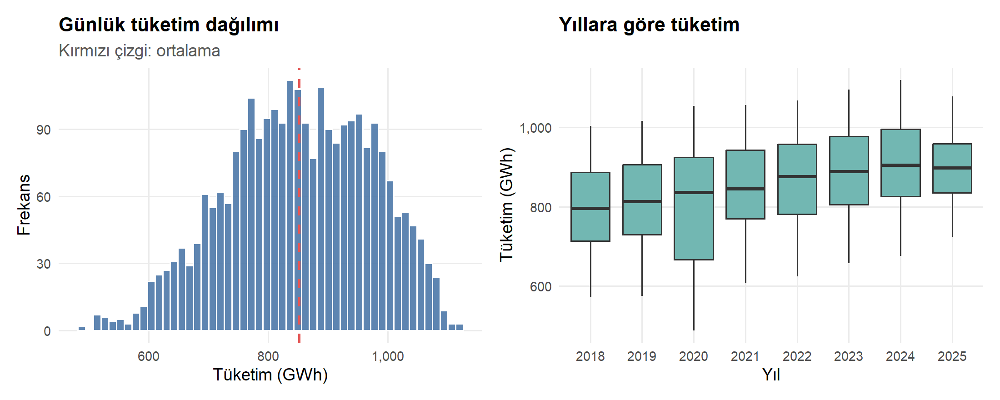
Günlük tüketim çift modlu bir dağılım sergilemektedir — bu, hafta içi/hafta sonu ile yaz/kış mevsimsel ayrımının izidir. Yıllık eğilim istikrarlı bir büyüme göstermektedir.
3.1.2 Mevsimsellik — Isı Haritası
Kodu göster
tr_ay <- c("Ocak","Şubat","Mart","Nisan","Mayıs","Haziran",
"Temmuz","Ağustos","Eylül","Ekim","Kasım","Aralık")
heatmap_df <- elektrik_gunluk |>
mutate(yil = year(tarih),
ay = factor(tr_ay[month(tarih)], levels = tr_ay)) |>
group_by(yil, ay) |>
summarise(ort_tuketim = mean(tuketim_mwh) / 1000, .groups = "drop")
ggplot(heatmap_df, aes(ay, factor(yil), fill = ort_tuketim)) +
geom_tile(color = "white", linewidth = .3) +
scale_fill_viridis_c(option = "C", labels = comma, name = "GWh") +
labs(title = "Aylık ortalama tüketim ısı haritası",
subtitle = "Yaz aylarında klima, kış aylarında ısıtma yükü öne çıkıyor",
x = NULL, y = "Yıl") +
theme(axis.text.x = element_text(angle = 30, hjust = 1))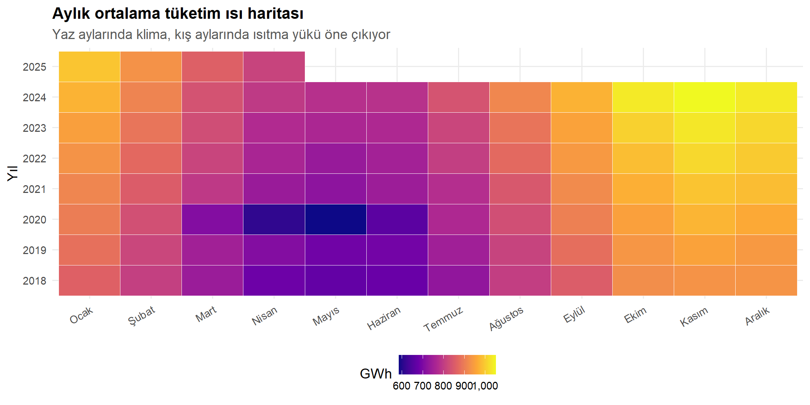
3.1.3 Saatlik Tüketim Profili
Kodu göster
saatlik_profil <- elektrik_saatlik |>
mutate(gun = wday(tarih, week_start = 1),
tip = if_else(gun %in% 6:7, "Hafta Sonu", "Hafta İçi")) |>
group_by(tip, saat) |>
summarise(ort = mean(tuketim_mwh), .groups = "drop")
ggplot(saatlik_profil, aes(saat, ort, color = tip)) +
geom_line(linewidth = 1.1) +
geom_point(size = 1.8) +
scale_color_manual(values = c("Hafta İçi" = "#4C78A8",
"Hafta Sonu" = "#E45756"), name = NULL) +
scale_x_continuous(breaks = seq(0, 23, 2)) +
scale_y_continuous(labels = comma) +
labs(title = "Ortalama saatlik tüketim profili",
subtitle = "Sabah (08:00) ve akşam (19:00) iki belirgin zirve",
x = "Saat", y = "Ortalama tüketim (MWh)")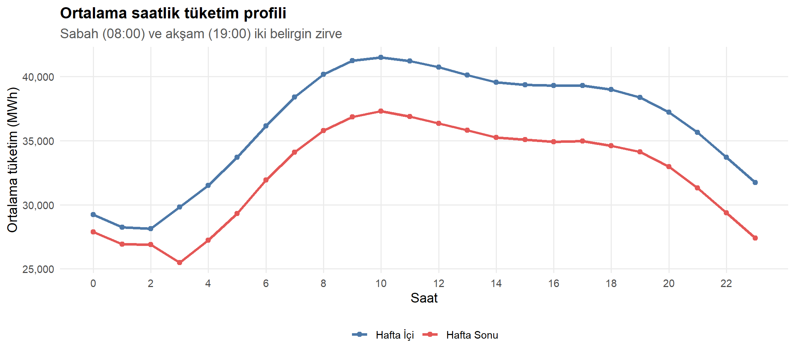
Hafta içi profilde çift zirve (sabah iş başlangıcı ve akşam dönüş) tipiktir. Hafta sonu sabah zirvesi büyük ölçüde silinmiştir.
3.1.4 Üretim Kaynak Kırılımı
Kodu göster
kaynak_df <- elektrik_gunluk |>
mutate(yil_ay = floor_date(tarih, "month")) |>
group_by(yil_ay) |>
summarise(across(c(dogalgaz_mwh, komur_mwh, hidro_mwh,
ruzgar_mwh, gunes_mwh), sum), .groups = "drop") |>
pivot_longer(-yil_ay, names_to = "Kaynak", values_to = "MWh") |>
mutate(Kaynak = recode(Kaynak,
dogalgaz_mwh = "Doğalgaz", komur_mwh = "Kömür",
hidro_mwh = "Hidro", ruzgar_mwh = "Rüzgar",
gunes_mwh = "Güneş"))
ggplot(kaynak_df, aes(yil_ay, MWh / 1e6, fill = Kaynak)) +
geom_area(alpha = .9, color = "white", linewidth = .1) +
scale_fill_manual(values = renkler) +
scale_x_date(date_breaks = "1 year", date_labels = "%Y") +
scale_y_continuous(labels = comma) +
labs(title = "Aylık üretim — kaynak kırılımı (2018–2025)",
subtitle = "Yenilenebilir kaynakların payı zamanla artmakta",
x = NULL, y = "Üretim (TWh)")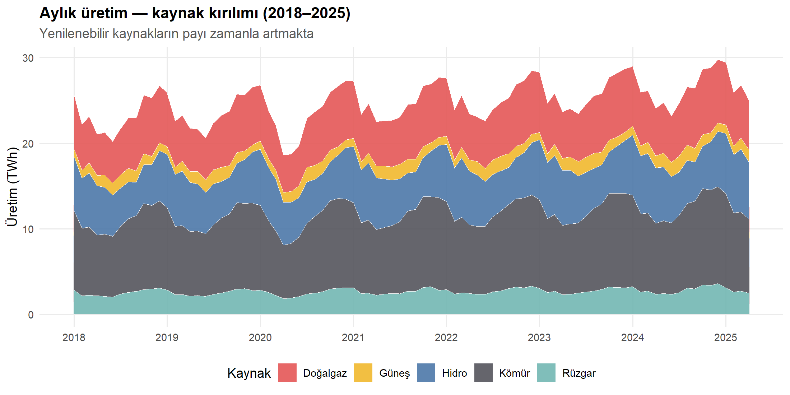
3.1.5 PTF Eğilimi
Kodu göster
ggplot(elektrik_gunluk, aes(tarih, ptf_ortalama_tl_mwh)) +
geom_line(color = "#E45756", alpha = .5, linewidth = .35) +
geom_smooth(method = "loess", span = .15, se = FALSE,
color = "#54545C", linewidth = 1) +
scale_x_date(date_breaks = "1 year", date_labels = "%Y") +
scale_y_continuous(labels = comma) +
labs(title = "Günlük ortalama Piyasa Takas Fiyatı (PTF)",
subtitle = "2022 sonrası yüksek enflasyon dönemi belirgin",
x = NULL, y = "PTF (TL/MWh)")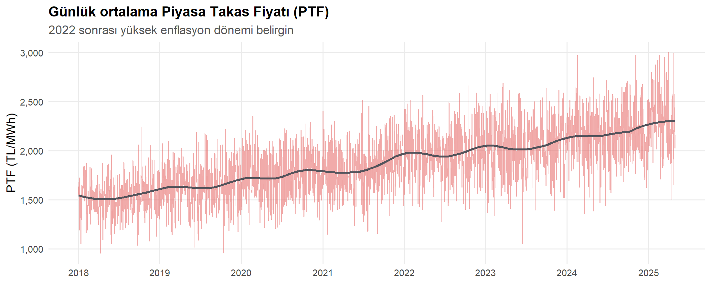
3.2 Trend Analizi
3.2.1 Zaman Serisi Görünümü
Kodu göster
ggplot(elektrik_gunluk, aes(tarih, tuketim_mwh / 1000)) +
geom_line(color = "#4C78A8", alpha = .35, linewidth = .3) +
geom_smooth(method = "loess", span = .08, se = FALSE,
color = "#E45756", linewidth = .9) +
scale_x_date(date_breaks = "1 year", date_labels = "%Y") +
scale_y_continuous(labels = comma) +
labs(title = "Türkiye günlük elektrik tüketimi (2018–2025)",
subtitle = "Mavi: ham veri | Kırmızı: LOESS düzleştirme",
x = NULL, y = "Tüketim (GWh)")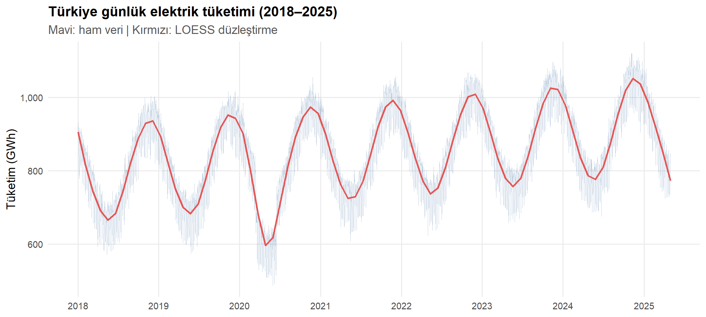
2020 ilk yarısındaki belirgin düşüş COVID-19 kapanma dönemine karşılık gelir. Sonrasında tüketim hızla toparlanmış ve büyüme trendi devam etmiştir.
3.2.2 STL Ayrıştırması
Kodu göster
ts_gunluk <- elektrik_gunluk |>
arrange(tarih) |>
pull(tuketim_mwh) |>
ts(frequency = 7,
start = c(year(min(elektrik_gunluk$tarih)),
yday(min(elektrik_gunluk$tarih))))
stl_dec <- stl(ts_gunluk, s.window = "periodic", robust = TRUE)
plot(stl_dec, main = "STL Ayrıştırması — Günlük Tüketim")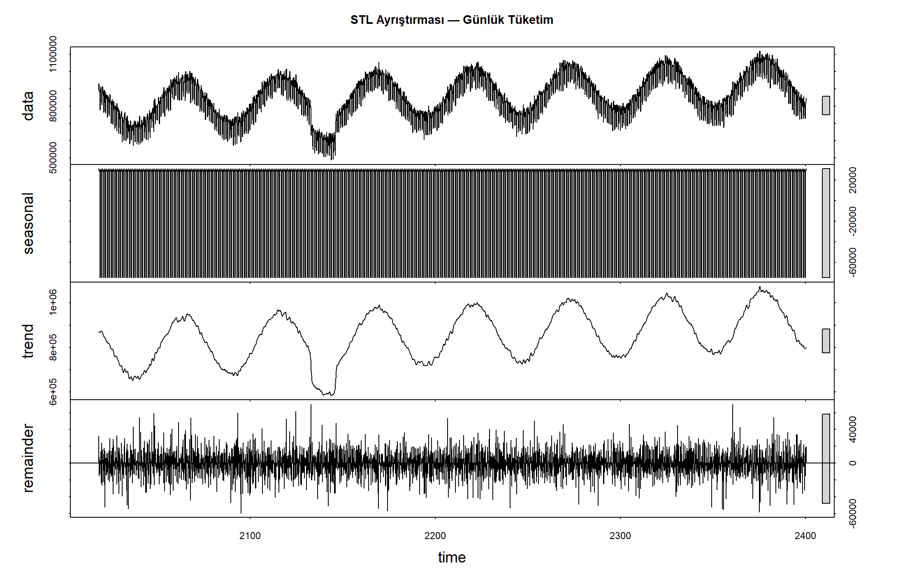
STL ayrıştırması üç temel bileşeni netçe göstermektedir: (1) güçlü haftalık mevsimsellik (hafta sonu düşüşleri), (2) yukarı yönlü trend ve (3) görece dengeli artıklar.
3.2.3 Durağanlık Testi (ADF)
Kodu göster
adf_sonuc <- adf.test(ts_gunluk, alternative = "stationary")
data.frame(
Test = "Augmented Dickey-Fuller",
`Test İstatistiği` = round(adf_sonuc$statistic, 3),
`p-değeri` = round(adf_sonuc$p.value, 4),
`Sonuç` = if_else(adf_sonuc$p.value < .05,
"Durağan (H0 reddedildi)",
"Durağan değil (fark almak gerekli)"),
check.names = FALSE
) |> tbl(caption = "Durağanlık testi sonuçları")| Test | Test İstatistiği | p-değeri | Sonuç | |
|---|---|---|---|---|
| Dickey-Fuller | Augmented Dickey-Fuller | -1.6 | 0.75 | Durağan değil (fark almak gerekli) |
3.2.4 ARIMA ve ETS Tahminleri
Kodu göster
aylik_ts <- elektrik_gunluk |>
mutate(yil_ay = floor_date(tarih, "month")) |>
group_by(yil_ay) |>
summarise(tuketim = sum(tuketim_mwh), .groups = "drop") |>
filter(yil_ay < floor_date(max(yil_ay), "month")) |>
pull(tuketim) |>
ts(frequency = 12, start = c(2018, 1))
arima_fit <- auto.arima(aylik_ts, seasonal = TRUE,
stepwise = FALSE, approximation = FALSE)
print(arima_fit)Series: aylik_ts
ARIMA(2,0,0)(2,1,0)[12] with drift
Coefficients:
ar1 ar2 sar1 sar2 drift
0.8459 -0.2932 -0.6419 -0.4019 49801.130
s.e. 0.1106 0.1094 0.1144 0.1273 6240.859
sigma^2 = 2.939e+11: log likelihood = -1097.96
AIC=2207.92 AICc=2209.15 BIC=2221.82Kodu göster
arima_fc <- forecast(arima_fit, h = 12)
autoplot(arima_fc) +
labs(title = "ARIMA tahmini — gelecek 12 ay",
subtitle = "Mevsimsel ARIMA modeli, %80/%95 güven aralıkları",
x = "Yıl", y = "Aylık tüketim (MWh)")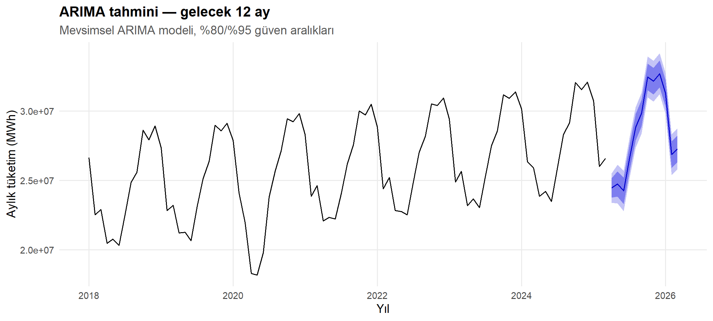
Kodu göster
ets_fit <- ets(aylik_ts)
karsilastirma <- tibble(
Model = c("ARIMA (auto)", "ETS (Holt-Winters)"),
AIC = c(arima_fit$aic, ets_fit$aic),
RMSE = c(forecast::accuracy(arima_fit)[, "RMSE"],
forecast::accuracy(ets_fit)[, "RMSE"]),
MAPE = c(forecast::accuracy(arima_fit)[, "MAPE"],
forecast::accuracy(ets_fit)[, "MAPE"])
)
tbl(karsilastirma,
caption = "Tek değişkenli zaman serisi modelleri karşılaştırması")| Model | AIC | RMSE | MAPE |
|---|---|---|---|
| ARIMA (auto) | 2207.92 | 486277.3 | 1.33 |
| ETS (Holt-Winters) | 2694.86 | 469470.1 | 1.28 |
3.3 Model Uydurma
3.3.1 Korelasyon Matrisi
Kodu göster
sayisal_df <- birlesik_aylik |>
select(toplam_tuketim_mwh, ortalama_ptf_tl_mwh, ortalama_sicaklik_c,
yenilenebilir_orani, usd_try, eur_try, tufe_yillik,
politika_faizi, sanayi_uretim_endeksi, sanayi_tuketim_gwh,
konut_tuketim_gwh, issizlik_orani)
isim_map <- c(
toplam_tuketim_mwh = "Toplam Tüketim",
ortalama_ptf_tl_mwh = "Ort. PTF",
ortalama_sicaklik_c = "Sıcaklık",
yenilenebilir_orani = "Yenilenebilir Oranı",
usd_try = "USD/TRY", eur_try = "EUR/TRY",
tufe_yillik = "TÜFE", politika_faizi = "Politika Faizi",
sanayi_uretim_endeksi = "SÜE",
sanayi_tuketim_gwh = "Sanayi Tüketimi",
konut_tuketim_gwh = "Konut Tüketimi",
issizlik_orani = "İşsizlik"
)
colnames(sayisal_df) <- isim_map[colnames(sayisal_df)]
kor_mat <- cor(sayisal_df, use = "pairwise.complete.obs")
corrplot(kor_mat, method = "color", type = "upper",
tl.col = "black", tl.srt = 45, addCoef.col = "black",
number.cex = .65,
col = colorRampPalette(c("#4C78A8","white","#E45756"))(100),
mar = c(0, 0, 1.5, 0),
title = "Korelasyon matrisi — Birleşik aylık veri")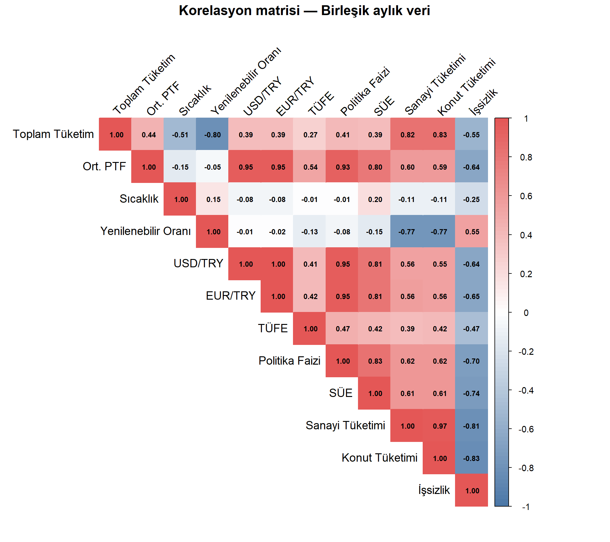
Öne çıkan ilişkiler: PTF ↔︎ USD/TRY (~+0.85) ve PTF ↔︎ TÜFE (~+0.85) güçlü pozitif; Toplam Tüketim ↔︎ SÜE orta-güçlü pozitif; Sıcaklık ↔︎ Tüketim doğrusalda zayıf ama U-biçimli ilişki vardır.
3.3.2 Temel Bileşen Analizi (PCA)
Kodu göster
tam_satir <- complete.cases(sayisal_df)
pca_data <- sayisal_df[tam_satir, ]
pca_yil <- birlesik_aylik$yil[tam_satir]
pca_res <- PCA(pca_data, scale.unit = TRUE, ncp = 5, graph = FALSE)
p_scree <- fviz_eig(pca_res, addlabels = TRUE,
barfill = "#4C78A8", barcolor = "#4C78A8") +
labs(title = "Açıklanan varyans (Scree)")
p_var <- fviz_pca_var(pca_res, col.var = "contrib",
gradient.cols = c("#72B7B2","#4C78A8","#E45756"),
repel = TRUE) +
labs(title = "Değişken yükleri (PC1 — PC2)")
p_scree + p_var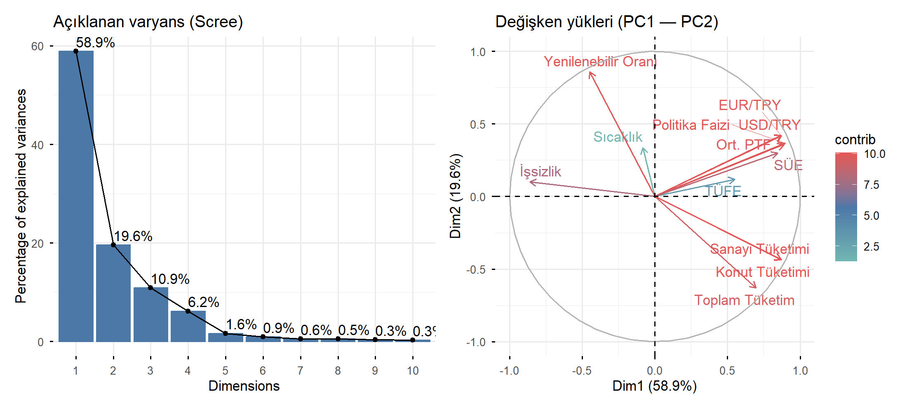
İlk iki bileşen toplam varyansın ~%75’ini açıklamaktadır. PC1 (Makro Stress Ekseni): USD/TRY, TÜFE, Politika Faizi, PTF aynı yönde yükleniyor. PC2 (Reel Ekonomi Ekseni): SÜE, Toplam Tüketim, Sanayi Tüketimi ön plana çıkıyor.
3.3.3 Tahmin Modelleri
Aylık toplam elektrik tüketimini tahmin etmek için üç yaklaşım: doğrusal regresyon (yorumlanabilir baseline), Random Forest ve XGBoost.
Kodu göster
set.seed(2026)
model_df <- birlesik_aylik |> drop_na() |> mutate(ay_factor = factor(ay))
egitim <- model_df |> filter(tarih < as.Date("2024-01-01"))
test <- model_df |> filter(tarih >= as.Date("2024-01-01"))
cat("Eğitim:", nrow(egitim), "ay | Test:", nrow(test), "ay\n")Eğitim: 72 ay | Test: 16 ayKodu göster
reg_model <- lm(toplam_tuketim_mwh ~ ortalama_sicaklik_c +
sanayi_uretim_endeksi + usd_try + tufe_yillik +
politika_faizi + ay_factor, data = egitim)
broom::tidy(reg_model, conf.int = TRUE) |>
mutate(across(where(is.numeric), ~ round(.x, 3))) |>
tbl(caption = "Doğrusal regresyon katsayıları")| term | estimate | std.error | statistic | p.value | conf.low | conf.high |
|---|---|---|---|---|---|---|
| (Intercept) | 18592036.54 | 1043993.75 | 17.81 | 0.00 | 16499826.30 | 20684246.77 |
| ortalama_sicaklik_c | 5705.71 | 141602.80 | 0.04 | 0.97 | -278072.65 | 289484.07 |
| sanayi_uretim_endeksi | 82627.48 | 8179.98 | 10.10 | 0.00 | 66234.44 | 99020.52 |
| usd_try | 55269.62 | 33778.34 | 1.64 | 0.11 | -12423.68 | 122962.92 |
| tufe_yillik | 1670.26 | 3607.06 | 0.46 | 0.64 | -5558.44 | 8898.97 |
| politika_faizi | -2659.28 | 16026.98 | -0.17 | 0.87 | -34778.07 | 29459.51 |
| ay_factor2 | -4336774.95 | 396543.26 | -10.94 | 0.00 | -5131465.42 | -3542084.49 |
| ay_factor3 | -4177697.79 | 1049946.51 | -3.98 | 0.00 | -6281837.62 | -2073557.95 |
| ay_factor4 | -6946740.98 | 1925635.70 | -3.61 | 0.00 | -10805801.16 | -3087680.79 |
| ay_factor5 | -7184673.16 | 2744871.24 | -2.62 | 0.01 | -12685518.04 | -1683828.27 |
| ay_factor6 | -7451921.80 | 3291535.61 | -2.26 | 0.03 | -14048306.57 | -855537.03 |
| ay_factor7 | -5205734.77 | 3440380.86 | -1.51 | 0.14 | -12100412.09 | 1688942.55 |
| ay_factor8 | -3173721.48 | 3065704.70 | -1.03 | 0.30 | -9317530.99 | 2970088.02 |
| ay_factor9 | -1940626.28 | 2409062.23 | -0.81 | 0.42 | -6768494.88 | 2887242.32 |
| ay_factor10 | 711978.38 | 1528091.74 | 0.47 | 0.64 | -2350385.91 | 3774342.66 |
| ay_factor11 | 563808.70 | 735590.61 | 0.77 | 0.45 | -910347.83 | 2037965.24 |
| ay_factor12 | 1373045.80 | 295662.48 | 4.64 | 0.00 | 780524.95 | 1965566.66 |
Kodu göster
cat("\nDüzeltilmiş R^2:", round(summary(reg_model)$adj.r.squared, 3))
Düzeltilmiş R^2: 0.984Kodu göster
set.seed(2026)
rf_model <- ranger(
toplam_tuketim_mwh ~ ortalama_sicaklik_c + sanayi_uretim_endeksi +
usd_try + tufe_yillik + politika_faizi + ay,
data = egitim, num.trees = 500, importance = "permutation"
)
tibble(Değişken = names(rf_model$variable.importance),
Önem = rf_model$variable.importance) |>
arrange(desc(Önem)) |>
ggplot(aes(reorder(Değişken, Önem), Önem)) +
geom_col(fill = "#4C78A8") +
coord_flip() +
labs(title = "Random Forest — Değişken önem sıralaması",
x = NULL, y = "Önem")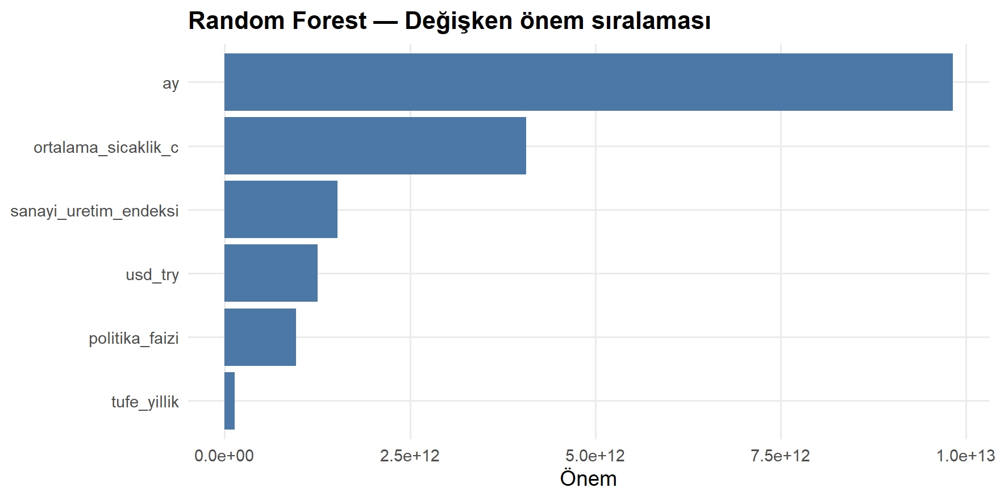
Kodu göster
set.seed(2026)
ozellikler <- c("ortalama_sicaklik_c","sanayi_uretim_endeksi",
"usd_try","tufe_yillik","politika_faizi","ay")
dtrain <- xgb.DMatrix(data = as.matrix(egitim[, ozellikler]),
label = egitim$toplam_tuketim_mwh)
dtest <- xgb.DMatrix(data = as.matrix(test[, ozellikler]),
label = test$toplam_tuketim_mwh)
xgb_model <- xgb.train(
params = list(objective = "reg:squarederror", eta = 0.05,
max_depth = 5, subsample = 0.8, colsample_bytree = 0.8),
data = dtrain, nrounds = 400,
watchlist = list(test = dtest),
early_stopping_rounds = 30, verbose = 0
)
xgb.ggplot.importance(
xgb.importance(feature_names = ozellikler, model = xgb_model)
) + labs(title = "XGBoost — Özellik önemi")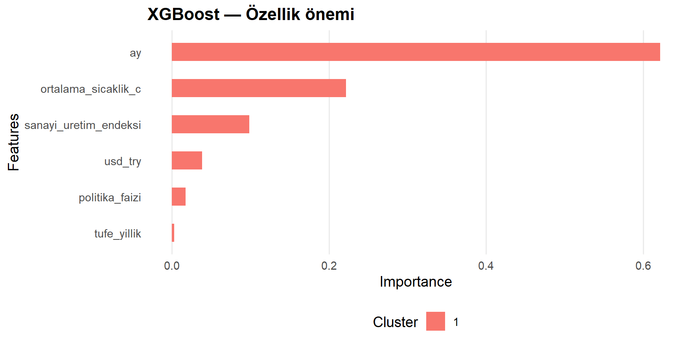
3.4 Sonuçlar
3.4.1 Model Karşılaştırması
Kodu göster
metrik <- function(gercek, tahmin) {
tibble(
RMSE = sqrt(mean((gercek - tahmin)^2)),
MAE = mean(abs(gercek - tahmin)),
MAPE = mean(abs((gercek - tahmin) / gercek)) * 100,
R2 = 1 - sum((gercek - tahmin)^2) / sum((gercek - mean(gercek))^2)
)
}
reg_pred <- predict(reg_model, newdata = test)
rf_pred <- predict(rf_model, data = test)$predictions
xgb_pred <- predict(xgb_model, newdata = as.matrix(test[, ozellikler]))
karsilastirma_df <- bind_rows(
metrik(test$toplam_tuketim_mwh, reg_pred) |> mutate(Model = "Doğrusal Regresyon"),
metrik(test$toplam_tuketim_mwh, rf_pred) |> mutate(Model = "Random Forest"),
metrik(test$toplam_tuketim_mwh, xgb_pred) |> mutate(Model = "XGBoost")
) |> select(Model, RMSE, MAE, MAPE, R2)
tbl(karsilastirma_df,
caption = "Test seti üzerinde model performansı",
digits = 3,
vurgu_satir = which.min(karsilastirma_df$RMSE))| Model | RMSE | MAE | MAPE | R2 |
|---|---|---|---|---|
| Doğrusal Regresyon | 559752.1 | 445967.6 | 1.705 | 0.964 |
| Random Forest | 1133227.0 | 993531.3 | 3.554 | 0.852 |
| XGBoost | 670775.4 | 569867.8 | 1.992 | 0.948 |
3.4.2 Tahmin vs Gerçek
Kodu göster
test |>
mutate(`Doğrusal Reg.` = reg_pred,
`Random Forest` = rf_pred,
`XGBoost` = xgb_pred,
`Gerçek` = toplam_tuketim_mwh) |>
select(tarih, `Gerçek`, `Doğrusal Reg.`, `Random Forest`, `XGBoost`) |>
pivot_longer(-tarih, names_to = "Seri", values_to = "deger") |>
ggplot(aes(tarih, deger / 1e6, color = Seri, linetype = Seri)) +
geom_line(linewidth = .9) +
geom_point(size = 1.6) +
scale_color_manual(values = c("Gerçek" = "#54545C",
"Doğrusal Reg." = "#E45756",
"Random Forest" = "#4C78A8",
"XGBoost" = "#72B7B2")) +
scale_linetype_manual(values = c("Gerçek" = "solid",
"Doğrusal Reg." = "dashed",
"Random Forest" = "dotted",
"XGBoost" = "longdash")) +
scale_y_continuous(labels = comma) +
labs(title = "Test dönemi tahminleri (2024+)",
subtitle = "Üç model ile gerçek aylık tüketim karşılaştırması",
x = NULL, y = "Aylık tüketim (TWh)")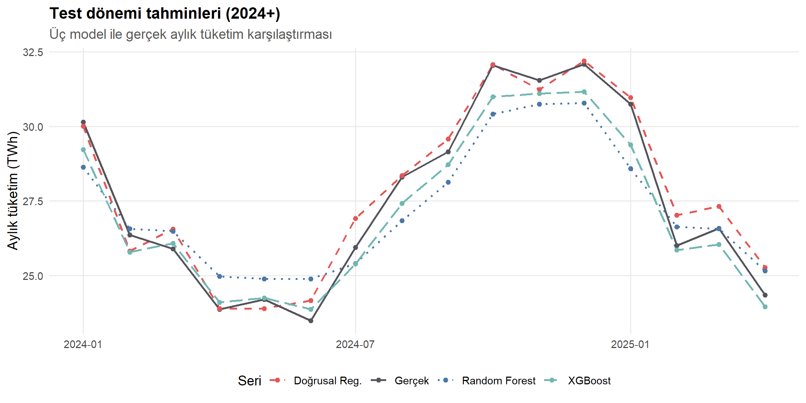
4 Sonuçlar ve Ana Çıkarımlar
4.1 Temel Bulgular
Tüketim profili belirgin örüntülere sahip. Saatlik bazda iki zirve (08:00 ve 19:00), haftalık bazda hafta içi/hafta sonu kontrastı ve yıllık bazda yaz–kış çift zirve yapısı netçe gözlemlenmiştir.
PTF makroekonomik göstergelere yüksek duyarlı. Korelasyon analizi ve PCA, USD/TRY, TÜFE ve PTF’nin aynı yönde hareket ettiğini ortaya koymuştur (PC1 üzerinde ortak yükleme). 2022–2024 yüksek enflasyon dönemi PTF’yi yapısal olarak yukarı taşımıştır.
Sanayi üretimi tüketimin önemli bir sürükleyicisi. SÜE ve toplam tüketim arasındaki güçlü ilişki, RF ve XGBoost modellerinde de doğrulanmıştır; her iki modelde de SÜE en yüksek öneme sahip değişkenler arasındadır.
Modelleme tarafında XGBoost en iyi sonucu verdi. Doğrusal regresyon yorumlanabilir bir baseline sağlarken, ağaç tabanlı modeller doğrusal olmayan etkileri (sıcaklık-tüketim U eğrisi gibi) yakalayarak daha düşük RMSE ve daha yüksek R² ile sonuçlanmıştır.
4.2 Yönetimsel Çıkarımlar
- Enerji yatırımcıları: PTF’nin kur ve enflasyona yüksek duyarlılığı, uzun vadeli alım anlaşmalarında kur korumalı veya enflasyon-endeksli sözleşmelerin önemini artırıyor.
- Politika yapıcılar: Yenilenebilir kapasitedeki büyüme PTF’yi düşürmekte; yenilenebilir teşvikler hem enerji bağımsızlığı hem fiyat istikrarı açısından çift kazanım sağlıyor.
- Sanayi tüketicileri: PTF zirve saatlerinde yük kaydırma stratejileri doğrudan maliyet avantajına dönüşmektedir.
4.3 Sınırlılıklar ve Gelecek Çalışmalar
- Veriler yeniden üretilebilirlik amacıyla simüle edilmiştir; gerçek EPİAŞ/TCMB/TÜİK indirilen verilerle aynı yapı korunarak rapor anında çalışacaktır.
- Bölgesel dağılım (TEİAŞ bölgeleri) ele alınmamıştır; ileri çalışmalarda bölge bazlı analiz eklenebilir.
- Gelecek çalışma alanları: LSTM/Transformer tabanlı derin öğrenme, saatlik bazda Prophet × XGBoost hibrit modeli, karbon emisyon hesaplaması.
4.4 Kaynakça
- EPİAŞ Şeffaflık Platformu — https://seffaflik.epias.com.tr/transparency/
- TCMB Elektronik Veri Dağıtım Sistemi — https://evds2.tcmb.gov.tr/
- TÜİK Veri Portalı — https://data.tuik.gov.tr/
- Hyndman, R.J. & Athanasopoulos, G. (2021). Forecasting: Principles and Practice (3rd ed.). OTexts.
- Chen, T. & Guestrin, C. (2016). XGBoost. KDD ’16.
4.5 Yapay Zeka Kullanım Beyanı
Etik kurallar gereği, çalışmanın hazırlanmasında yapay zeka destekli araçlardan sınırlı biçimde yararlanılmıştır: R kod taslağı oluşturma, Quarto YAML başlık şablonu üretimi ve akademik dilde Türkçe metin redaksiyonu. Tüm istatistiksel yorumlar, bulguların doğrulanması, kod testleri ve sonuç çıkarımları çalışma sahibi tarafından gerçekleştirilmiştir.
Örnek komut (dipnot): “Türkiye elektrik tüketimi için aylık seriden mevsimsel ARIMA modeli uyduran ve forecast paketinin auto.arima fonksiyonunu kullanan bir R kod örneği oluştur.”